SELFIE (2015)
A scene that pokes fun at the egocentric nature of social media and the rise of selfies. Currently installed in the Mobile Museum of Art in Mobile, Alabama. Human figures are approximately life size.

Creepy Crawler (2015)
Whimsical scene located 9 miles east of Miles City, Montana off Highway 94. Baby is 16 feet tall and is made of 175 painted plywood panels. The rhino, velociraptor, and bison are all life-size. Sponsored by the Art Club of Custer County District High School and installed on the Muggli Brothers ranch.

Siemer Auto (2014)
Friendly Service attendant and old Texaco gas station mural created for Siemer Auto in Fremont, Nebraska. 24 feet wide by 10 feet tall. Nostalgic scene reflecting the quality service and vehicles at Siemer Auto.

{kind=link}
Baby and Dresser/Louis Mohana Furniture (2015)
Giant dresser and baby installed alongside the drive up to Louis Mohana Furniture in Bourg, Louisiana. 12 feet tall by 16 feet wide.

Hathor and Hamish (2014)
Two colorful cows located on the same property as Cerney's "Enjoy the Game" mural in Prunedale, CA. Larger cow stands about 10 feet tall, smaller one about 7. Painting and installation assisted by Lizzie Prader.
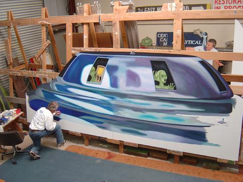
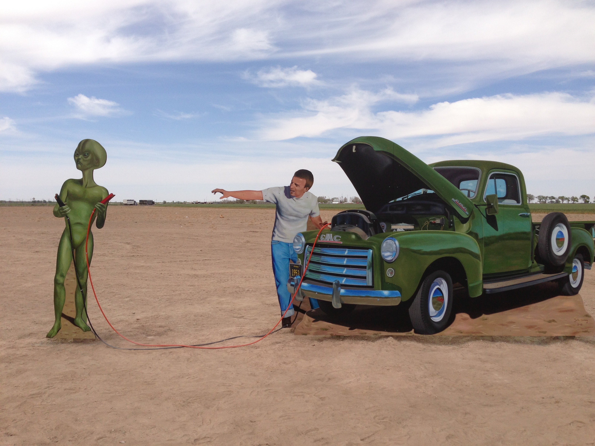

{kind=link}
{kind=link}
Welcome to Roswell (2013)
Top left: Main scene of 'Welcome to Roswell', located on Highway 285, 6 miles south of Roswell, New Mexico. Community donation mural depicting a local rancher family greeting space visitors. May of 2013
Top right: A scene to the right side of 'Welcome to Roswell'...rancher' son helping aliens jump start their saucer.
Bottom: The artist using lights for the first time on one of his installations. The 'Welcome to Roswell' flying saucer is adorned with LED lights, powered by a solar panel, lit up 24 hours a day.
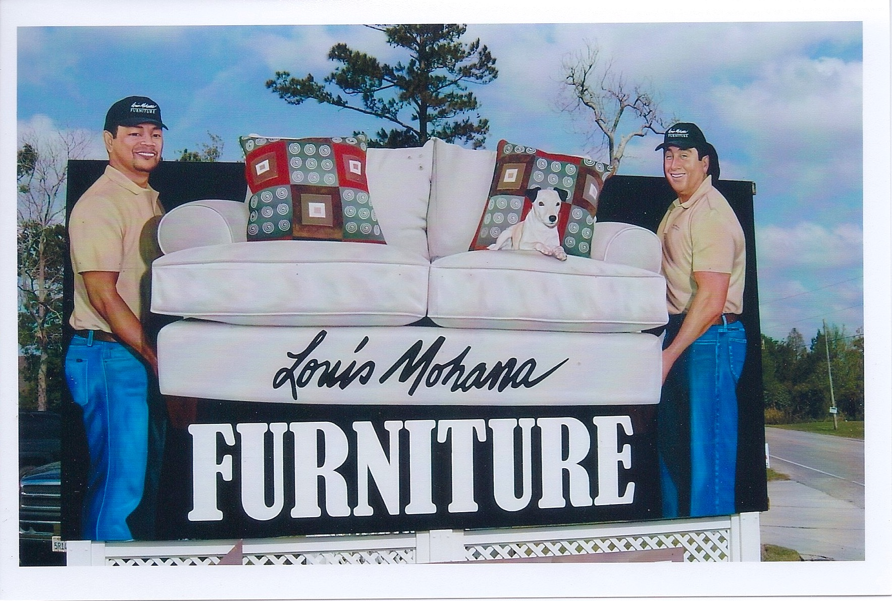
{kind=link}
Louis Mohana Furniture (2009)
Portion of a project for the Louis Mohana Furniture Company of Bourg, Louisiana-2 sided billboard, 14 foot tall.
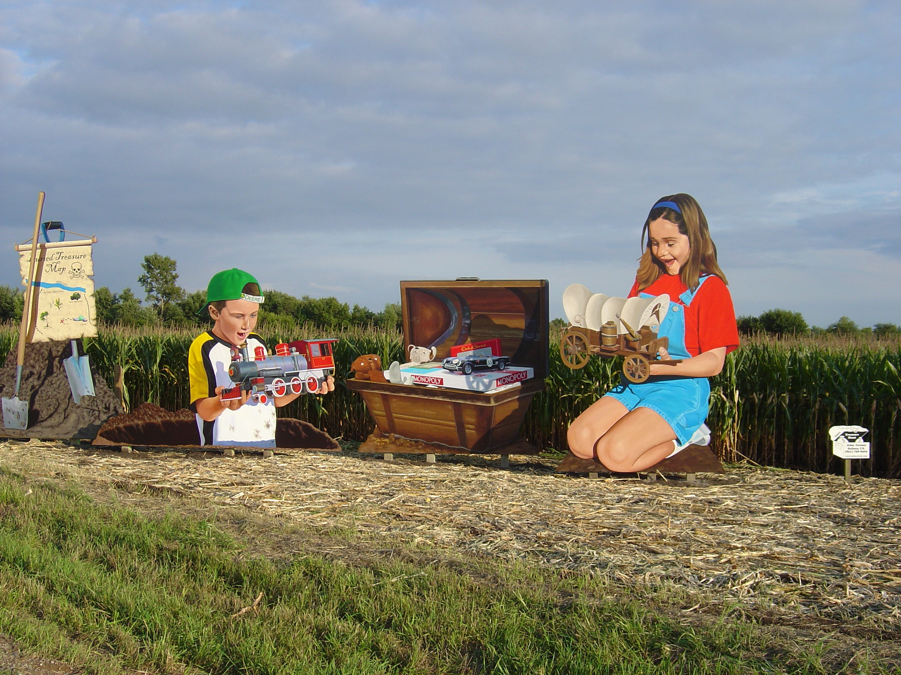
{kind=link}
Treasure Hunt (2007)
Located on Highway 141, in Granger, Iowa, about 20 miles Northwest of Des Moines. 16 feet tall scene of two kids who have dug up a buried treasure of classic old toys.
{kind=link}
Amelia Comes Home (2012)
A donation to the community of Atchison, Kansas, this mural, 'Amelia Comes Home' is the artist's lighthearted view of what happened to Amelia Earhart and navigator Fred Noonan on their fateful flight across the Pacific in 1937....they simply ran out of fuel and Amelia landed near her birthplace of Atchison. 38 feet wide by 11 feet tall. Photo by Mike Stec.
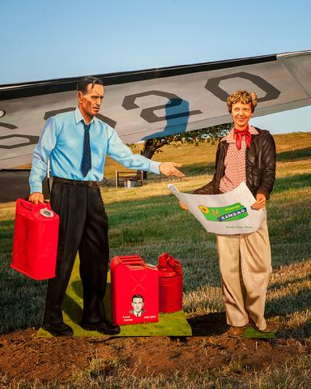{kind=link}
Detail of 'Amelia Comes Home' mural, installed outside of Atchison, KS (birthplace of Amelia Earhart) Non-commissioned project, a donation to the community....the artist's version of what happened to Amelia and her navigator Fred Noonan on their fateful flight over the Pacific in 1937. Slightly larger than life-size.
{kind=link}
{kind=link}
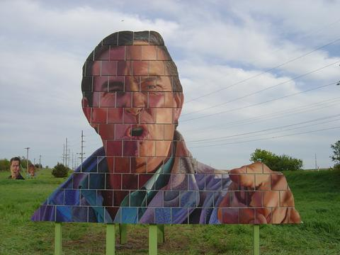
{kind=link}
Emoticons (2009-2010)
Angry Guy (Jeff Hitchcock). One of 3 twelve foot tall portraits installed alongside the I-80 Freeway in Iowa City, Iowa. On the property of the Harvest Farm and Preserve.
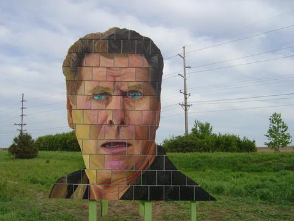{kind=link}
Befuddled Guy (Dave Diamond) The 2nd portrait you see of the 3 faces. Twelve foot tall.
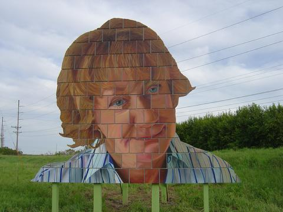{kind=link}
Disappointed Gal (Liz Andrus) The 3rd portrait you see of the 3 twelve foot tall faces. Installed alongside the I-80 Freeway in Iowa City, Iowa. Created using the artist's method of randomly selecting small squares of the photo image onto 12" square plywood panels.
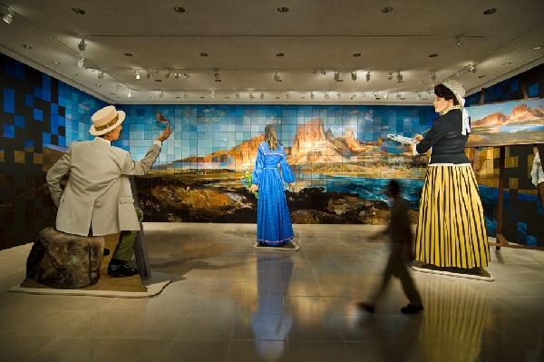
{kind=link}
Rice Gallery Show (2006)
Rice University, Houston, Texas. Titled ' Big Landscape-Big West'. A scene from the late 1890's of an American family taking in a dramatic canyon vista of the Colorado River, from a painting by Thomas Moran. The landscape consists of over 900 masonite panels.
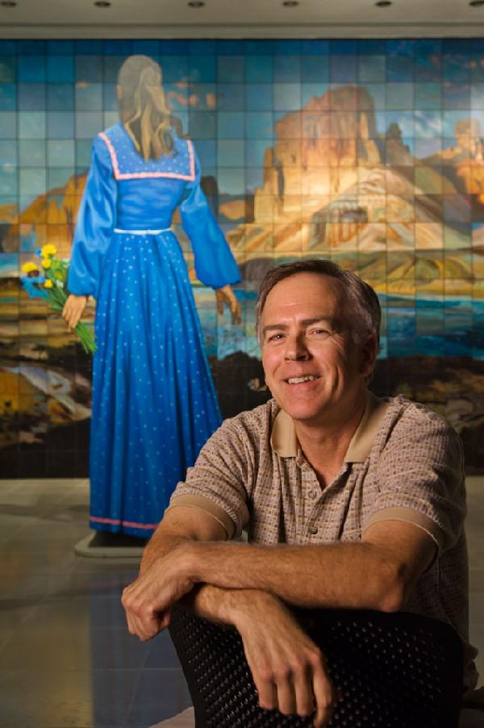{kind=link}
Photo of John Cerney in front of his show.
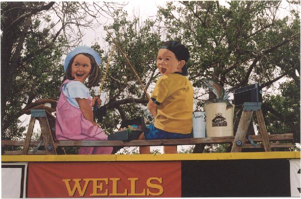
{kind=link}
The Big Catch (2004)
Casper, Wyoming (assisted by Dong Sun Kim). Placed beyond the outfield wall of a minor league ballpark, the owner wanted to liven up the atmosphere of the park, and the artist took advantage of the river that runs next to the field to show 2 kids taking in the ballgame while casting for trout. 20 feet tall.
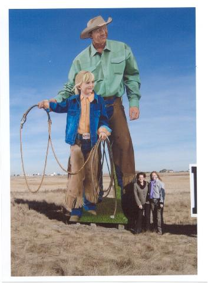
{kind=link}
Alberta Beef Producers (2008)
Calgary, Alberta. 22 foot tall cut-out of rancher and daughter.
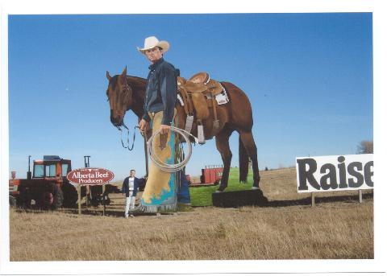{kind=link}
22 foot tall rancher and horse, with artist at base.
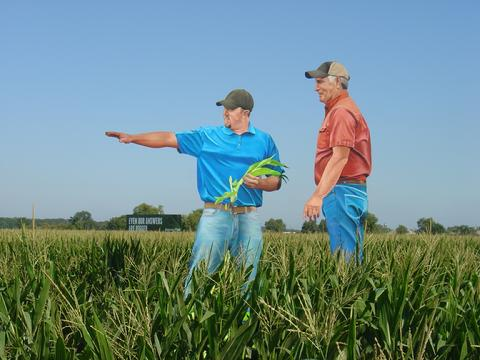
{kind=link}
Giant Corn Farmers (2012)
Commisioned by a Minnesota ad agency, these two 18 foot tall farmers are installed off Highway 35 near Ames, Iowa. They are meant to draw attention to a regional farm show.
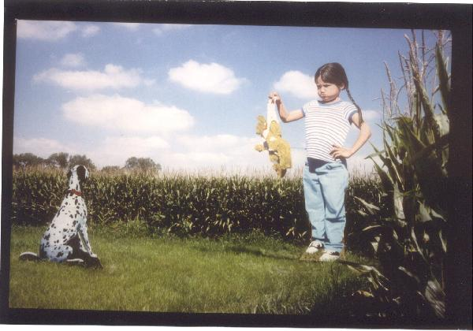
{kind=link}
Little Girl with Torn Teddy Bear and Dalmatian (1999)
16 feet tall. Installed in a corn field off Highway 30 near Dunlap, Iowa. A non-commissioned piece by Cerney as a visual oddity for drivers.
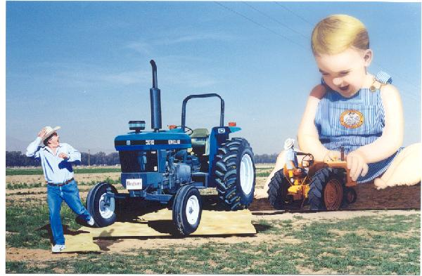
{kind=link}
Big Baby with Tractors (1998)
20 feet tall and located in Goodyear, AZ about 10 miles West of Phoenix on Highway 10. Commissioned by Duncan Family Farms as a 'marker' for travelers to spot before taking the next exit to their educational farm (closed in 2004). Assisted by Dong Sun Kim.
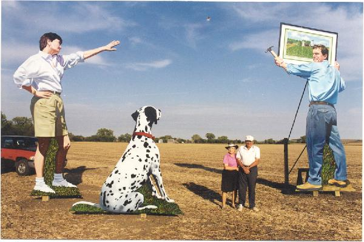
{kind=link}
Iowa Landscape (1997)
A non-commissioned scene on a farm in western Iowa. Cerney convinced the parents of an ex-produce worker friend to allow him to place this unusual domestic scene on the edge of their farm off Highway 30, near Dunlap, Iowa. 16 feet tall, the man is hanging an Iowa landscape painting in front of an actual Iowa landscape. The Heins are posed in the foreground, owners of the farm. This scene was replaced in 1999 by the Little Girl Crying, and the landscape scene now sits in front of a picture frame shop in Salinas, CA.
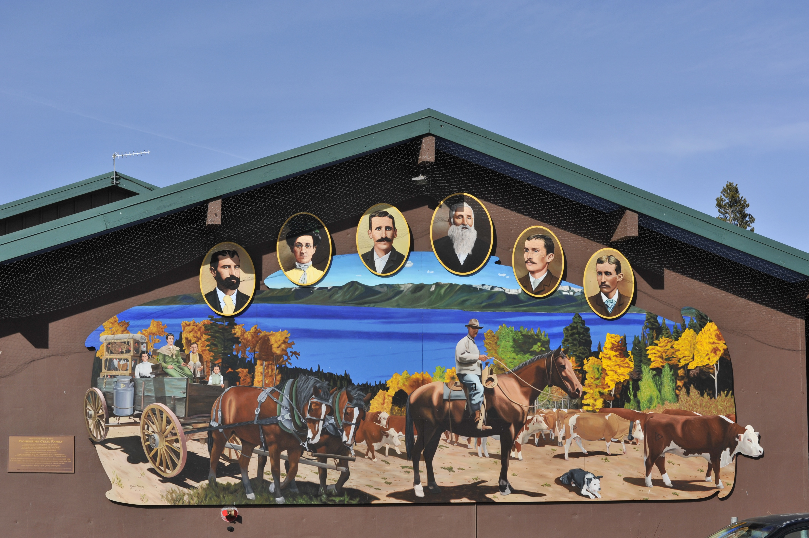
{kind=link}
Lake Tahoe Historical Society (2013)
Located on Highway 50 in Meyers, CA. 32 feet wide by 14 feet tall. A depiction of the Celio Family during one of their bi-annual cattle drives.
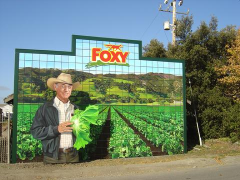
{kind=link}
Foxy Mural (2011-2012)
Newest version of the Foxy mural, on Highway 68 just outside of Salinas, CA. Tom Nunes Sr. stands in front of a Salinas Valley scene. The background is made up of over 400 plywood panels. The mural measures 17 feet tall by 26 feet wide. Background photo shot by Kirk Kennedy.
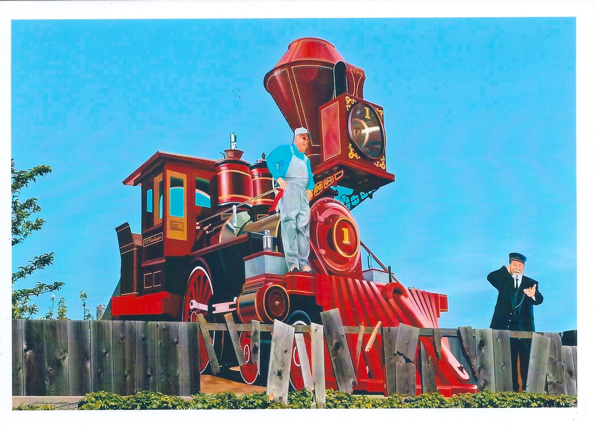
{kind=link}
Harvey House Train (2010)
A re-enactment of the first train that arrived in Salinas in 1872.....it actually only came off the tracks. Installed in the backyard of the Harvey House next to the train station. 18 feet tall
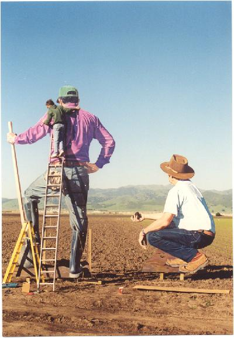

{kind=link}
Farmer & Irrigator (1995)
The first of the 'giant' figures. 18 feet tall. Highway 68, Salinas, CA. Commissioned by Salinas grower Chris Bunn to pay tribute to the agricultural labor force. Two in a series of 10 total farm figures.
Newer version of the mural above with some color changes.

Marilyn Monroe (2003)
Done for the Ag Wing of the National Steinbeck Center. 10 feet tall. Plays with the historical fact that Ms. Monroe was named the Artichoke Queen of the Castroville Artichoke Festival in 1948, before she was a Hollywood star. Assisted by Dong Sun Kim. The Ag Wing is no longer, but the painting sits in the lobby of the Center.

Big Sur Marathon Mile Markers (2010)
Mile 14 marker for the Big Sur Marathon.

Mile 24 marker for the Big Sur Marathon. Sponsored by Runner's World Magazine. 7 feet tall.
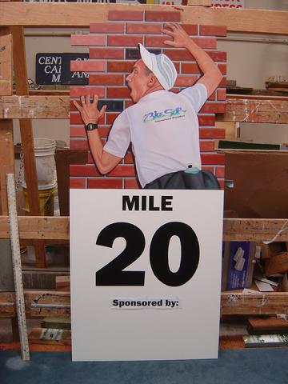{kind=link}
Mile 20 marker for the Big Sur Marathon, run in late April. (hitting the wall)
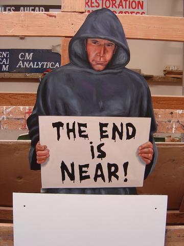{kind=link}
Detail of Mile 25 marker for the Big Sur Marathon- The Doomsayer

Marathon Finisher (2003)
12 feet tall. A tribute to Lise' Belton, who inspired the artist to start running in the mid-90's, ultimately completing the Big Sur Marathon with his friend Lise' in 2000. The painting is placed near the finish line of the Big Sur Marathon every April as a celebration of the accomplishment.

Rain For Rent (2015)
Mural/sign for the Rain for Rent irrigation company/San Joaquin, CA. 16 feet tall by 12 feet wide.
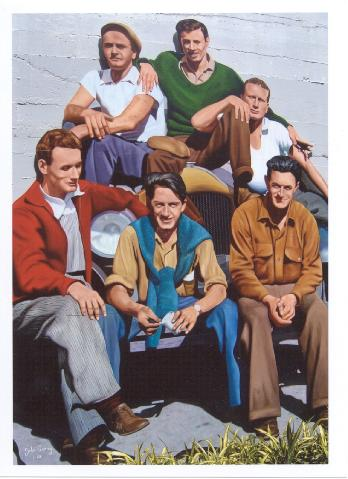
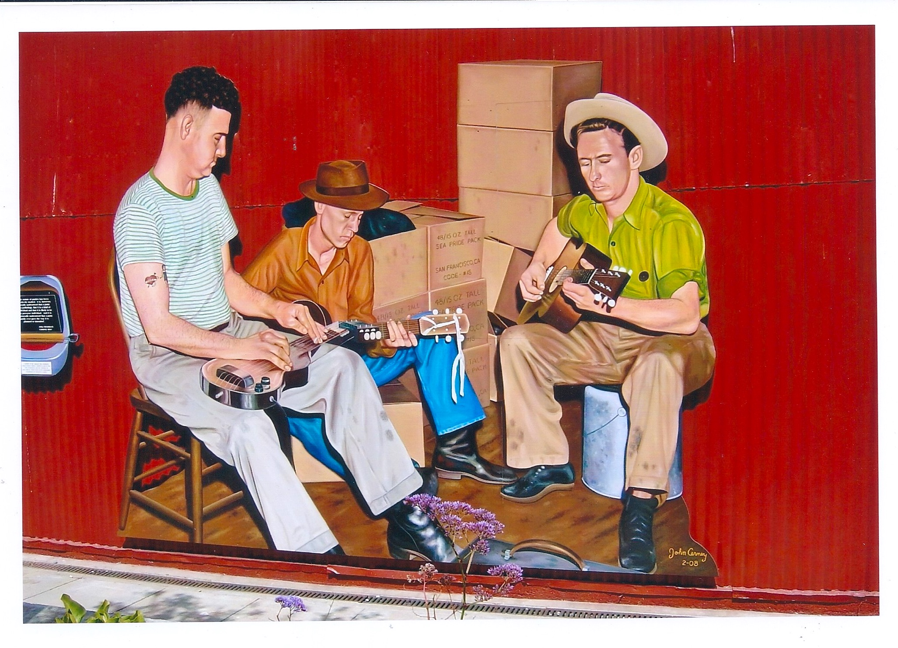

{kind=link}
{kind=link}
Cannery Row (2008)
Monterey, CA. A series of 3 scenes installed on a recreation trail that runs alongside Cannery Row in Monterey..
Top left: 12 foot tall cut-out showing cannery workers from the 1930's
Top right: Another in the series. 10 feet tall.
Bottom left: 10 feet by 18 feet. Depicts cannery workers from the 1950's.
Bottom right: The last of the 3 scenes of cannery workers, with John Cerney applying finishing touches.
{kind=link}
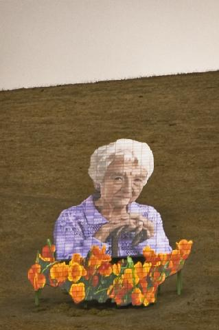
{kind=link}
Old Woman of the Mountain (2007-2008)
5 miles south of King City off of Highway 101. Over 500 plywood 'tiles' paintings make up the model and the flowers. A non-commissioned project. Photo shot by Dan Kaufman. More of Dan's work at www.studiokaufman.com
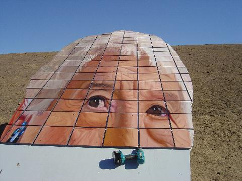{kind=link}
Installation detail.
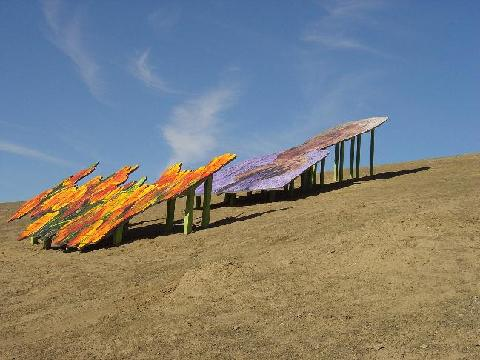{kind=link}
Side view showing the two structures. 550 painted MDO panels screwed onto one inch plywood base.
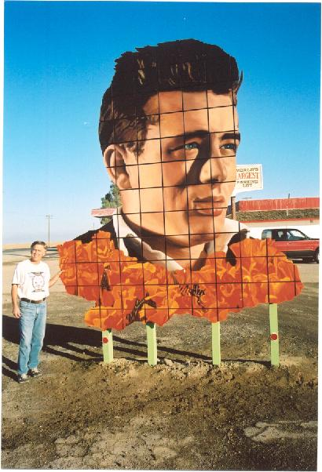
{kind=link}
James Dean (2004)
For the 50th Anniversary of his death on Sept. 30th, 1955. The location is on Highway 46 in Central California, at Blackwell's Corner, the last stop Dean made before being fatally injured in a car crash down the road. Painted on square plywood panels. 12 feet tall.

Karate Kid (2001)
Assisted by Dong Sun Kim, this 18 foot tall little girl with her dog is meant to be a reminder to drivers on Highway 68 near Salinas, CA that there is a shopping center right behind her....with Karate classes as well.
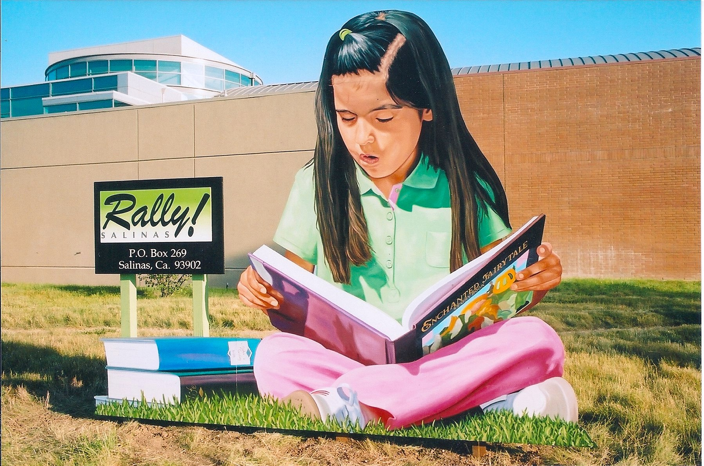
{kind=link}
Rally Salinas (2005)
A 10 foot tall little girl reading a book. Cerney donated the mural to help the city of Salinas, CA with its' financial difficulties and potential closure of its' libraries.
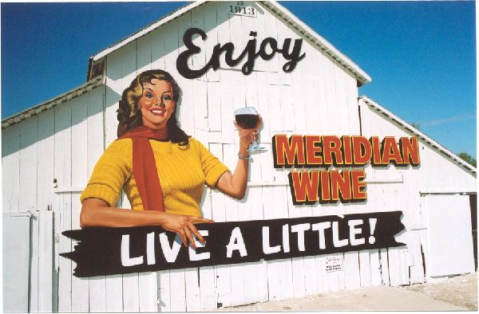
{kind=link}
Meridian Vineyards Barn Mural(2005)
A pin-up girl themed mural/billboard located on Highway 46, 10 miles East of Paso Robles, CA.
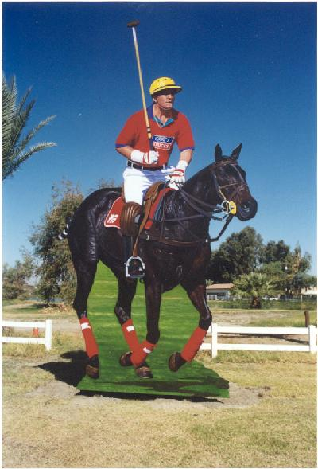
{kind=link}
Polo Pony (2001)
One of two polo ponies and riders that Mr. Kim and Cerney painted for the El Dorado Polo Club in Palm Desert, CA. 16 feet tall, they greet visitors as they enter the grounds.

Abbott Street Auto Body (2000)
Salinas, CA. Slightly larger than life, this is the 2nd generation mural created for a local auto body shop. Assisted by Dong Sun Kim.

Bob Lyman (1995)
One of the 3 original 'giant' figures that Cerney painted for the Crown Packing Company in Salinas, CA. Bob, a fieldman for Crown for over 50 years, was honored with this painting on his 80th birthday. It was originally installed on Highway 101 just south of Salinas, then moved a few years later to Highway 68 near the Salinas River. It was completely re-done in 2002 with the new acrylic paints that the artist now uses.
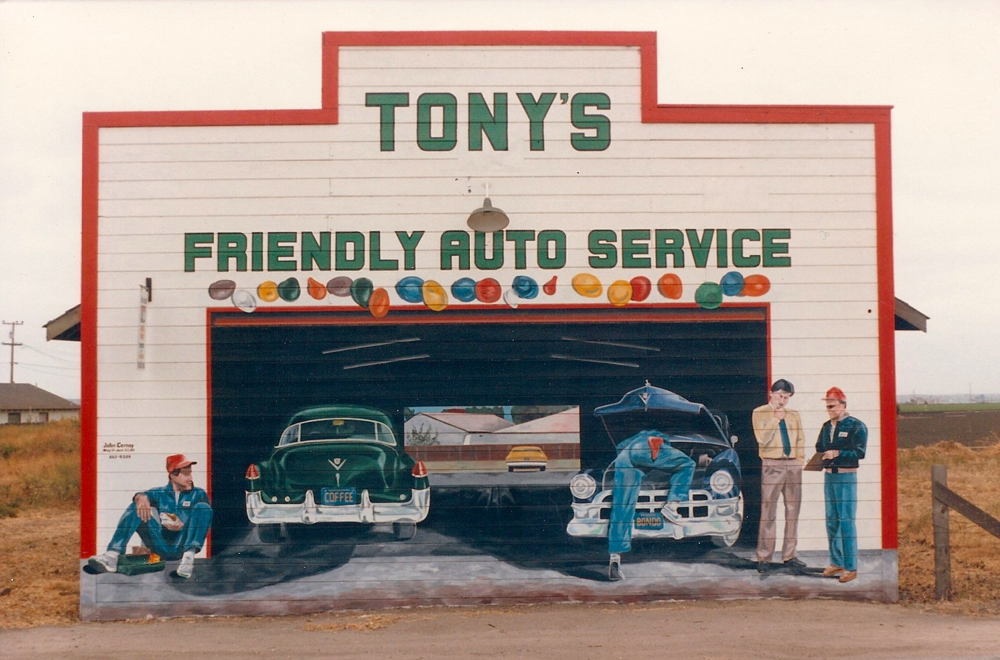
{kind=link}
Tony's Friendly Auto Service-1983
Highway 68 near Salinas,CA (16 feet tall by 30 feet wide). Cerney's very first public art project after graduating from Cal State University Long Beach. Cerney asked the owner (Sam Eastman) if he could paint his old barn, and he said to go ahead. It turns out that the building is one of the oldest standing structures in Monterey County (1860's), and Cerney has painted 7 different mural images on this site over the years.
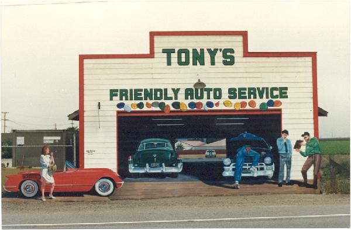Cerney wanted to refresh the mural and add some 3-dimensional elements to the scene, so he painted a gal in an old Corvette, and the service manager is sticking outside the right edge of the building. This version appeared in National Geographic Magazine in 1988.
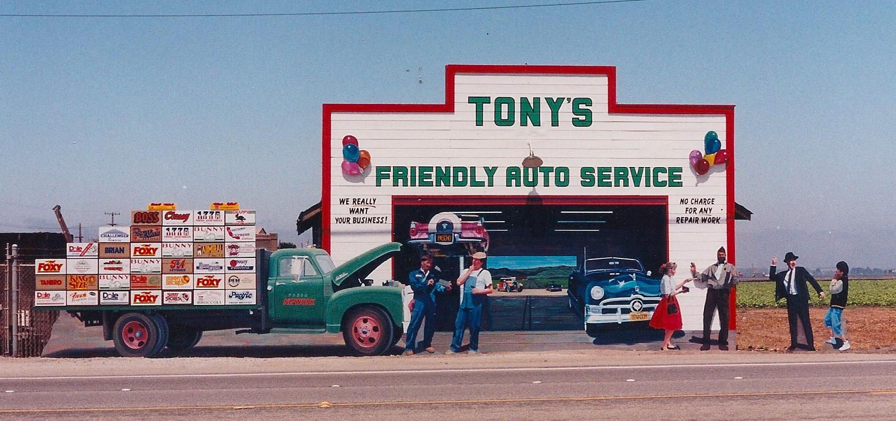{kind=link}
Cerney finally came up with a concept to make some money on this mural by adding a flatbed pickup truck loaded up with Salinas Valley produce boxes, and charging each company that signed up a fee to have their label painted on. The scene also started to get more populated with customers. As with most of his personal projects, Cerney used friends as models.

Phoenix Zoo (2002)
Dong Sun Kim did the actual painting of this giant anaconda greeting visitors to the Phoenix Zoo. It is larger than life, but not by much.

Shown in Cerney's shop, this is a series of snakes created for the zoo that would hang in various areas to keep the visitors on their toes. Snakes were featured for this particular exhibit.

This scene sits at the entry to the capybara (worlds largest rodent) enclosure at the zoo, with a frightened feline for emphasis. Assisted by Dong Sun Kim.

Grapes of Wrath (1995)
12 feet tall by 16 feet wide. Installed alongside Highway 68 in Salinas as a teaser for the upcoming National Steinbeck Center, opened several months later. John Steinbeck is seen peeking behind one of the gas pumps in this 'still' from the Hollywood movie of Steinbeck's popular novel. Taken down in the early 2000's.
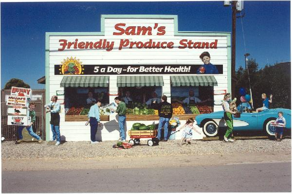


{kind=link}
Sam's Friendly Produce Stand- 1997
This time working with Dong Sun Kim, Cerney said goodbye to Tony's and welcomed in Sam's.....Sam being named after Sam Eastman, the property owner. Real awnings installed, a cool old Corvette, and many more cutout people to create a buzz of activity.
Cerney kept the revenue stream coming by employing a larger flatbed truck with even larger cartons than before.
In the foreground section, a little girl (Lizzie) pulls a wagon full of watermelons, dropping one. All figures were roughly life-size.
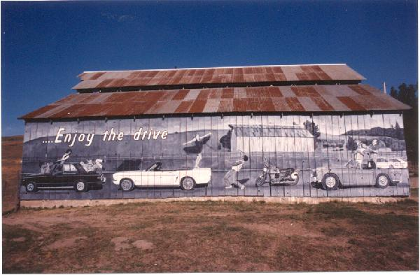
{kind=link}
Enjoy the Drive (1985)
Located off Highway 101 in Aromas. 11 feet tall by 50 feet wide. One of Cerney's very early barn murals, and a rare one painted in black and white, it was just a fun message of not stressing out on your daily drive. Cerney painted it in oil-base enamel, and it started cracking and deteriorating within 3 years. He ultimately started using water base acrylic paints, and this barn mural became his 'Enjoy the Game' mural in 1991.

Enjoy the Game (1991 & 2005)
This barn on Highway 101 north of Salinas changed its' theme from Enjoy the Drive to the baseball scene Enjoy the Game in 1991, and in this image from 2005 when it was totally restored. It depicts the 'golden era' of baseball from the 1940's and 50's. Revenue was derived from the sponsorship of the billboard panels and the fans in the stands. 12 feet tall by 50 feet wide.
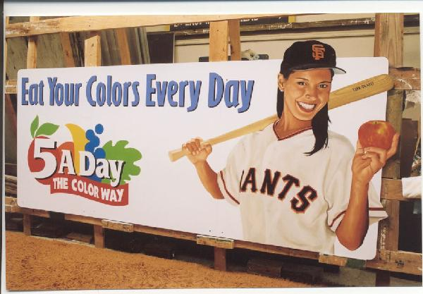{kind=link}
One of the billboards just completed in the artists shop for the baseball barn scene on Highway 101 north of Salinas, Ca. The model is Lisa Silacci and the sponsor of the 5-a-day message is the Mills Family Farms.
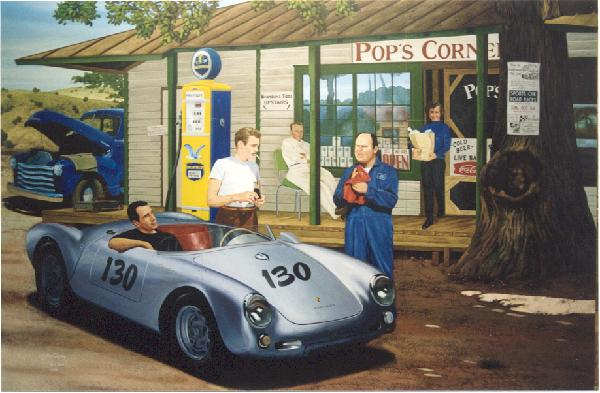

{kind=link}
Timshel (2002)
Commissioned by Mike Corlett, co-owner of Brandon & Tibbs Accounting firm in Salinas, Ca. This mural is painted on masonite and screwed onto their downstairs lobby wall.
Actor James Dean stopping at a market/service station on his fateful trip to Salinas for some auto races. He died a few miles down the road in a head-on collision. Assisted by Dong Sun Kim. 10 feet tall by 12 feet wide.
Top right: Detail photo of James Dean standing next to his Porsche Spyder from this mural in the Brandon & Tibbs lobby in Salinas, Ca.
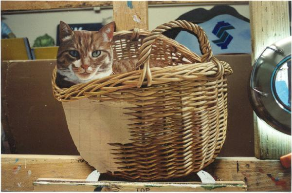
{kind=link}
Cat in Basket (2001)
In progress shot of a private commission that would become a wall-hanging.

Arm with Hat (1999)
Placed on Highway 68 on the edge of the Salinas River Bridge. The artwork is 8 feet tall, but it sits about 25 feet off the ground. Commissioned by the Crown Packing Company and meant to welcome people to the Salinas Valley. Perhaps the most curious mural the artist has painted, Cerney is often asked what happened to the head.
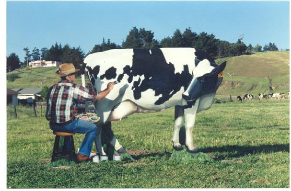
{kind=link}
Another Landscape Painter (1994)
6 feet tall by 10 feet wide. One of Cerney's first freestanding cut-out murals, placed alongside Highway 101 in Prunedale on the property of Schoch Dairy. Designed by Cerney, but painted by Olia Polovneff. No longer in existence.
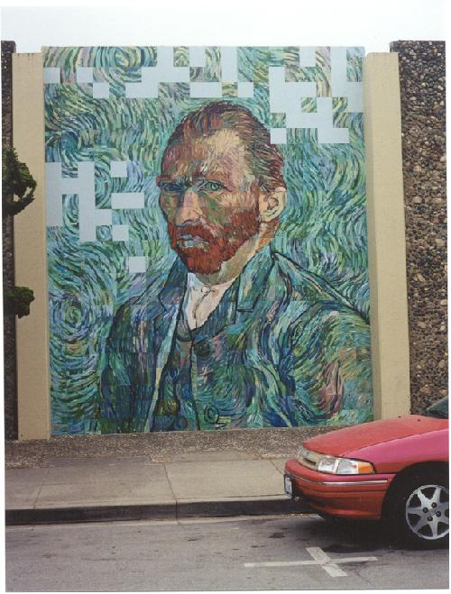
{kind=link}
Vincent Van Gogh (2000)
Nearly completed in this shot, it is a tribute mural to one of Cerney's favorite artists. The owners of the Star Shopping Center in Salinas, CA. paid for the supplies and allowed Cerney the use of a panel on a side street of the shopping center. It was painted randomly using little cut-out sections of a larger poster of one of the artist's many self portraits. Working in this way allowed Cerney to experiment with color and not become obsessed with copying a Van Gogh.

Alan's Glass (1994)
Lifesize cut-out mural for an auto glass shop in Sand City, CA. The '55 Chevy was borrowed from baseball star Reggie Jackson's collection for the scene. Fellow artist Olia Polovneff painted the 2 figures.

Cochetti Body Shop (1986 & 1993)
Cerney's first commercial mural, located in Salinas, CA. Painted on cinderblock wall. Lifesize.